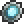

Magic Mirror
| Magic Mirror | |
|---|---|
|  | |
| Statistics | |
| Type | Miscellaneous |
| Max stack | 1 |
| Mana | 20 |
| Rarity | Blue |
| Use time | 89 |
| Tooltip | Gaze in the mirror to return home. |
| Sell | 1 |
The Magic Mirror is an item found in Chests in the Underground, Underground Jungle, Ocean, and Dungeon. It allows the user to warp back to their spawn with a roughly one second delay at the cost of 20 Mana. The Mirror was created to discourage players from committing suicide as a method to return home; it allows players with low health to return home without the risk of losing their loot.
Trivia
- The Magic Mirror and Rocket Boots were the first two items to have their Mana cost changed.
- Teleporting with the Magic Mirror while under the Horrified status will kill you on arrival of your spawn point/bed.
History
- 1.0.5: 20 mana points cost added.
- Pre-Release: Introduced.